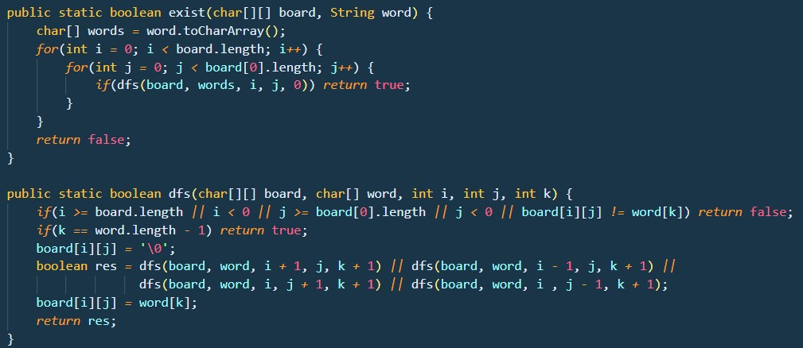
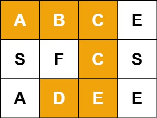

Given an m x n grid of characters board and a string word, return true if word exists in the grid.
The word can be constructed from letters of sequentially adjacent cells, where adjacent cells are horizontally or vertically neighboring. The same letter cell may not be used more than once.
 
**Let's use the test case above.**
First, we store break the String into characters and store it in an array of characters and we will get:
**[A,B,C,C,E,D]**
The two for loops will be representing rows and columns. The loop will start at first row, from first item to last item and proceeds to second row items.
For each of the iteration, a Depth-first-search (DFS) will be performed.
**Depth-first-search (DFS)**
The dfs() method will accept 5 parameters: